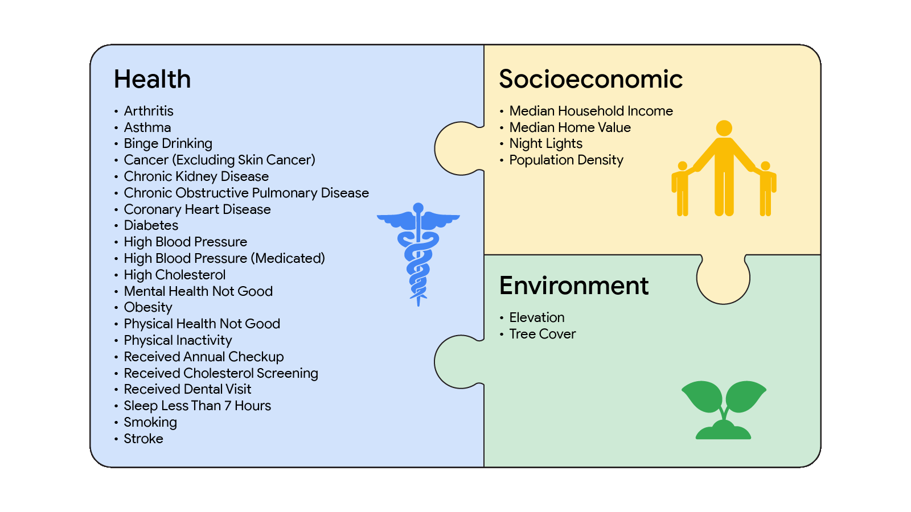
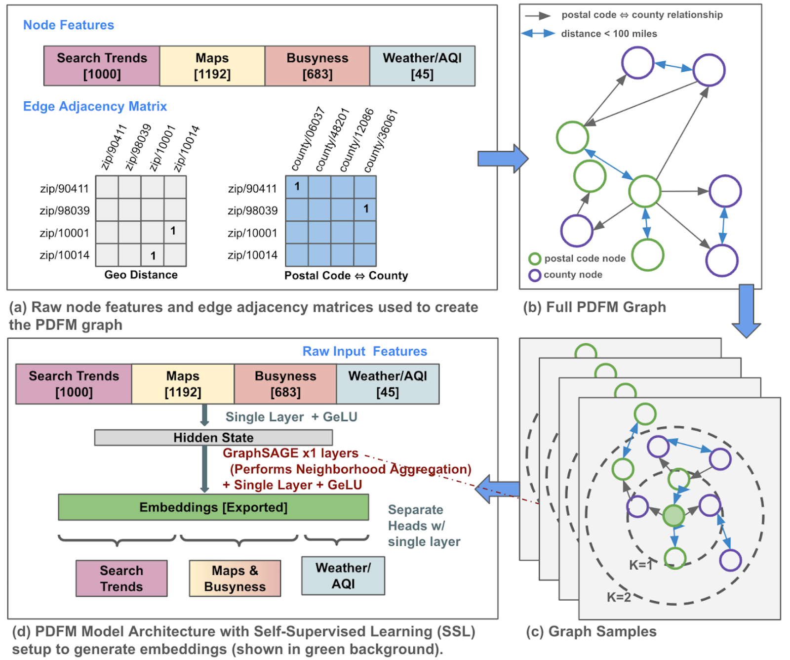
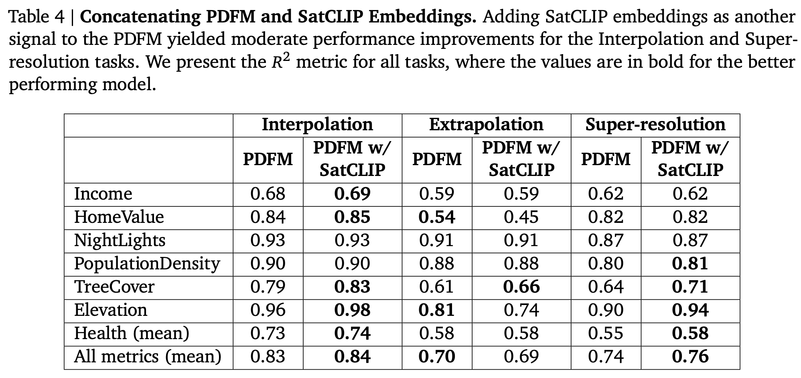
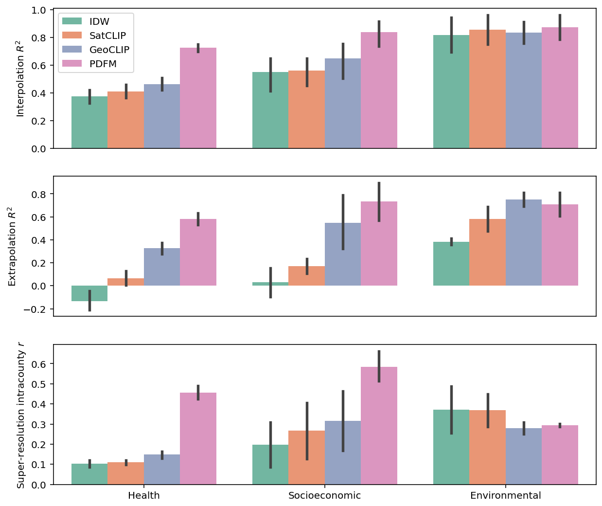
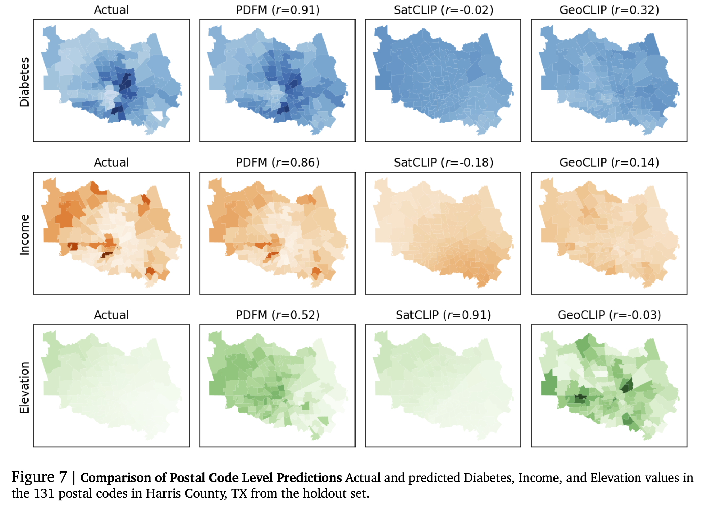
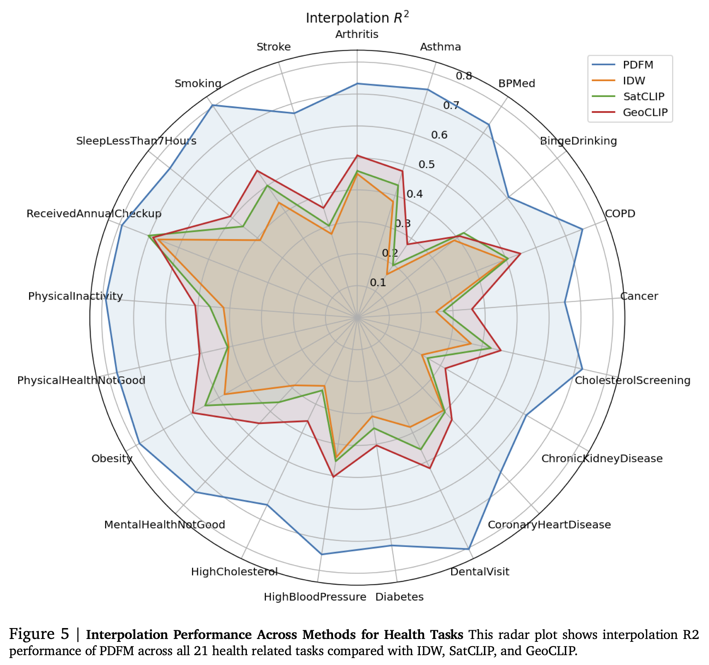
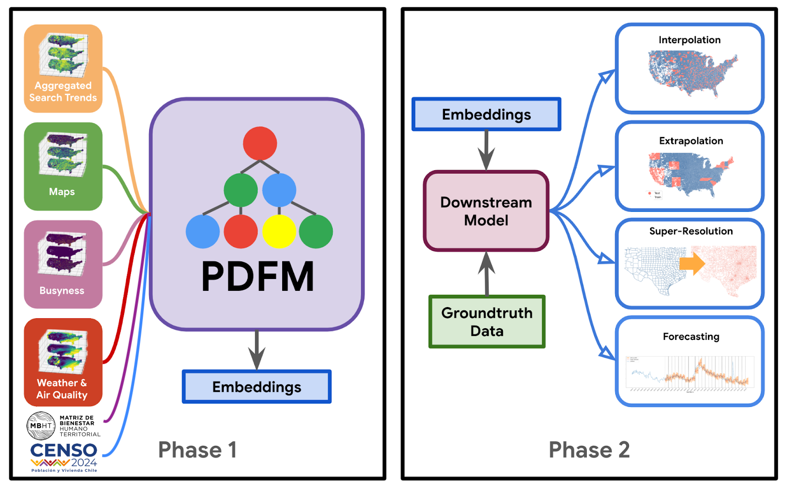

Resivisión ejecutiva de estudios de IA y Urbanismo
2025-08-22
Este proyecto tiene como propósito central la revisión, análisis, documentación y difusión de investigaciones científicas recientes en inteligencia artificial (IA), con énfasis en aplicaciones prácticas y potencial impacto territorial en Chile. Se orienta a facilitar el acceso y comprensión de avances significativos en dos líneas principales:
Urban AI: Aplicaciones de IA en contextos urbanos (planificación urbana, accesibilidad, desigualdad, vulnerabilidad, seguridad ciudadana).
Remote Sensing AI : Aplicaciones de IA en percepción remota (monitoreo ambiental, gestión de recursos naturales, prevención de riesgos).

| Elemento | Detalle |
|---|---|
| Título completo | General Geospatial Inference with a Population Dynamics Foundation Model |
| DOI | https://doi.org/10.48550/arXiv.2411.07207 |
| Temática | IA geoespacial; modelos fundacionales; GNN; embeddings multimodales; forecasting |
| Contexto | Unifica señales heterogéneas para inferir dinámicas poblacionales y apoyar predicción. Busca embeddings reutilizables para interpolación, extrapolación y super-resolución. |
| Keywords | foundation model, geospatial embeddings, GNN, multimodal, interpolación, forecasting |
Propone un modelo fundacional geoespacial (PDFM) que integra múltiples fuentes para aprender embeddings locales reutilizables.
Con estos embeddings, el sistema aborda interpolación, extrapolación y super-resolución de variables socioeconómicas y ambientales, y mejora pronósticos cuando se combina con modelos temporales.
Evalúa 27 tareas principalmente en EE.UU., mostrando ventajas frente a baselines y discutiendo limitaciones por desalineación temporal, cobertura geográfica y riesgos de sesgo.
Agarwal et al. (2024) — General Geospatial Inference with a Population Dynamics Foundation Model
Agarwal et al. (2024) — General Geospatial Inference with a Population Dynamics Foundation Model
Fase 1 – Modelo fundacional (PDFM): construcción de un grafo geoespacial (códigos postales y condados como nodos; aristas por proximidad y similitud de comportamiento) e integración de modalidades (tendencias de búsqueda agregadas, POIs en mapas, busyness, clima y calidad del aire; además embeddings SatCLIP como variante).
Fase 2 – Tareas downstream: uso de embeddings como covariables en modelos ligeros (Ridge, GBDT, MLP) para interpolación, extrapolación y super‑resolución de 27 variables (salud, socioeconomía, ambiente).
Agarwal et al. (2024) — General Geospatial Inference with a Population Dynamics Foundation Model
Datos Fase 1
Datos Fase 2

Agarwal et al. (2024) — General Geospatial Inference with a Population Dynamics Foundation Model
PDFM (GNN GraphSAGE): muestreo de subgrafos hasta 4 saltos; agregación pooling; una ronda de message passing; capa lineal final (≈330 dim); entrenamiento auto‑supervisado con pérdida Huber; embeddings con partición por fuente (0‑127 Búsquedas; 128‑255 Mapas/Busyness; 256‑329 Clima/Calidad aire).
Downstream: Ridge, LightGBM (GBDT; hasta 3000 árboles; 31 hojas; lr 0.02), MLP (512‑256‑128, ReLU, dropout 0.2, Adam, 40 épocas).
Pronóstico: TimesFM + MLP adaptador (2 capas) para corrección de errores.

Agarwal et al. (2024) — General Geospatial Inference with a Population Dynamics Foundation Model


Agarwal et al. (2024) — General Geospatial Inference with a Population Dynamics Foundation Model
Contribuciones:
Limitaciones:
Futuro:

Agarwal et al. (2024) — General Geospatial Inference with a Population Dynamics Foundation Model
Salud pública: Predecir enfermedades y orientar políticas y recursos de salud.
Retail: Integrar población, consumo y competencia en decisiones estratégicas.
Riesgo climático: Modelar impactos de deforestación, calidad del aire y cambio climático.
Economía: Caracterizar regiones con embeddings para optimizar PIB y desempleo.

Agarwal et al. (2024) — General Geospatial Inference with a Population Dynamics Foundation Model

Interpolación: Rellenar datos faltantes en áreas con información parcial.
Extrapolación: Predecir variables en zonas o regiones sin datos previos.
Super-resolución: Estimaciones a mayor nivel de detalle que el original.
Pronósticos: Predecir la evolución temporal de variables clave.
Agarwal et al. (2024) — General Geospatial Inference with a Population Dynamics Foundation Model
| Elemento | Detalle |
|---|---|
| Título completo | Large Language Model Powered Intelligent Urban Agents: Concepts, Capabilities, and Applications |
| DOI | https://doi.org/10.48550/arXiv.2507.00914 |
| Temática | Agentes urbanos con LLM; integración IA–datos espaciales |
| Contexto | Los enfoques previos carecen de flexibilidad y generalización espaciotemporal; los LLM habilitan agentes urbanos más adaptativos. |
| Keywords | LLM, agentes urbanos, RAG, transporte, planificación, confiabilidad |
Define el concepto de agentes urbanos potenciados por LLM y sus capacidades. Se propone marco conceptual y arquitectura, haciendo una revisión sistemática del estado del arte.
Componentes principales:
Describe aplicaciones en planificación, transporte, ambiente, seguridad y sociedad.
Discute confiabilidad, evaluación y retos para despliegues en el mundo real.
Han et al. (2025) — Large Language Model Powered Intelligent Urban Agents
Han et al. (2025) — Large Language Model Powered Intelligent Urban Agents
Enfoque: revisión conceptual y sistemática sobre agentes urbanos LLM. Actúa en entornos híbridos (ciber, físico, social)
Modelos: Transformer instruccionado, RAG, RLHF, cadenas de pensamiento.
Diseño: cinco módulos—sensado, memoria, razonamiento, ejecución, aprendizaje.
Salidas: Planes urbanos, informes, sugerencias
Datos:
| Tipo | Fuente |
|---|---|
| Geovector | OSM, catastros urbanos |
| Series temporales | Sensores tráfico/aire |
| Trayectorias GPS | Registros movilidad municipal |
| Imágenes | Satélite, cámaras urbanas |
Han et al. (2025) — Large Language Model Powered Intelligent Urban Agents
Han et al. (2025) — Large Language Model Powered Intelligent Urban Agents
Han et al. (2025) — Large Language Model Powered Intelligent Urban Agents
Han et al. (2025) — Large Language Model Powered Intelligent Urban Agents
Planificación territorial inteligente: Integrar análisis urbano con datos chilenos para apoyar políticas públicas y priorizar inversiones.
Monitoreo ambiental avanzado: Uso combinado de sensores nacionales y satélites abiertos para alertas y gestión sostenible.
Optimización del transporte: Simuladores urbanos y control adaptativo de semáforos para reducir congestión y emisiones.
Condiciones habilitantes: Acceso a datos locales, escalas territoriales pertinentes, resguardo de privacidad y alineamiento con normativas.
Impacto directo: Ministerios, municipalidades, gestores ambientales y ciudadanía mejor informada y partícipe.
Han et al. (2025) — Large Language Model Powered Intelligent Urban Agents
Diagnóstico: Exceso de datos heterogéneos (seguridad, social, obras, medio ambiente, transporte) que superan la capacidad municipal para analizarlos y convertirlos en acciones.
Arquitectura inspirada en la Ciudad Digital:
Captura IoT y Fuentes Locales: Sensores de calidad del aire, cámaras de seguridad, sistemas de transporte, catastros, registros sociales y obras.
Procesamiento Inteligente: Filtrado y categorización automática. Análisis espacial y temporal.Síntesis para cuadros ejecutivos y dashboards.
Toma de Decisiones:
Han et al. (2025) — Large Language Model Powered Intelligent Urban Agents